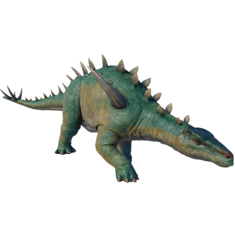

Useful Website
At around 8.5m in length, Huayangosaurus resembles a smaller version of Stegosaurus, sharing the same distinctive back plates as its more renowned relative. Its name translates to ‘Huayang lizard’, in reference to the location of its discovery, the previous name of the Sichuan region of China. As well as the prominent armoured plates on its back, Huayangosaurus has a spiked tail that helps it to defend itself from predators.
